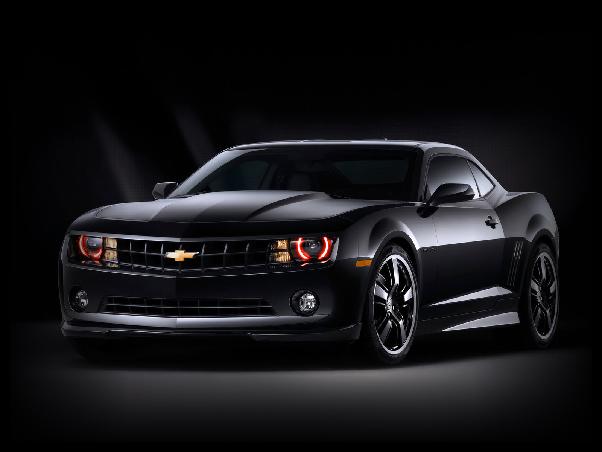
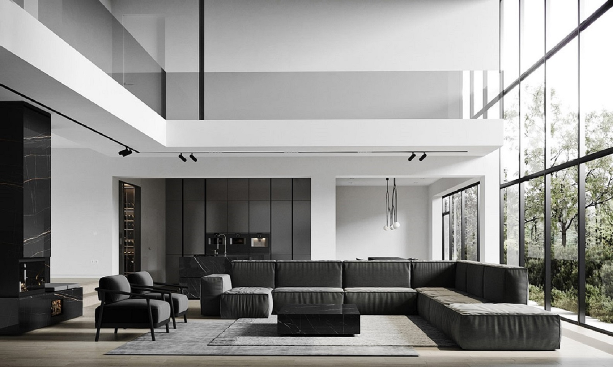

Hello my Name is Brian McCraw and here at A Clear View Window Tinting, I specialize in professional window film installation for automotive, residential, and commercial applications. I am a local Spartanburg and American owned and run Company that uses American made window film. I have years of experience dating back to 1986. I am dedicated business owner providing superior service and installation with quality SunTek products.
I am a precision window film installer that only works on about 2 to 3 cars a day, not some production line of kids that learned how to tint on YouTube trying to get you in and out of a shop so they can make a quick buck. All vehicle’s I work on are meticulously taken care of as if it were my own. I cover all door panels and back decks so that no water can reach any electronics and believe me there’s a lot of electronics in vehicles these days.
I also do not apply window film to full windshields because of all the electronics under dashes now. You can practically ruin a vehicle by tinting a windshield while it's in the vehicle. Also, for anyone who doesn’t know it is Illegal in SC to tint a full windshield with any kind of aftermarket window film. So don't let some local joe blow YouTuber try to tell you different the fines are steep!!! I have heard of people getting up to $500.00 fines for tinted windshields!!! So, Buyer Beware!!! If you don’t believe me then Google SC window tint laws.
But if you are interested in getting your vehicle tinted and you want a seasoned veteran doing it while taking care of your newly purchased vehicle and don't want it back in 30 to 60 min, then give me a call. I promise you want regret it. I will take my time install whatever shade you want and do it correctly with no issues.
I use a high-end Window Film Plotter to precision cut the film so that no razors ever touch the vehicle and use proper window film solutions to install it with so you wont ever be stuck with a back window that’s fully of bubbles after a year or two.

Automotive Window Tinting: Enhance your vehicle's appearance and improve privacy while protecting your interior from harmful UV rays and reducing heat.

Residential Window Tinting: Improve your home’s energy efficiency, increase privacy, and reduce glare with our top-quality window films.
Commercial Window Tinting: Boost your business’s curb appeal, enhance employee comfort, and protect your interior furnishings from sun damage with my expert tinting solutions.
Phone: 864-529-7883
Address: 1507C Asheville Hwy. Spartanburg S.C.29303
Hours of Operation: Mon. - Fri. 8am to 5pm